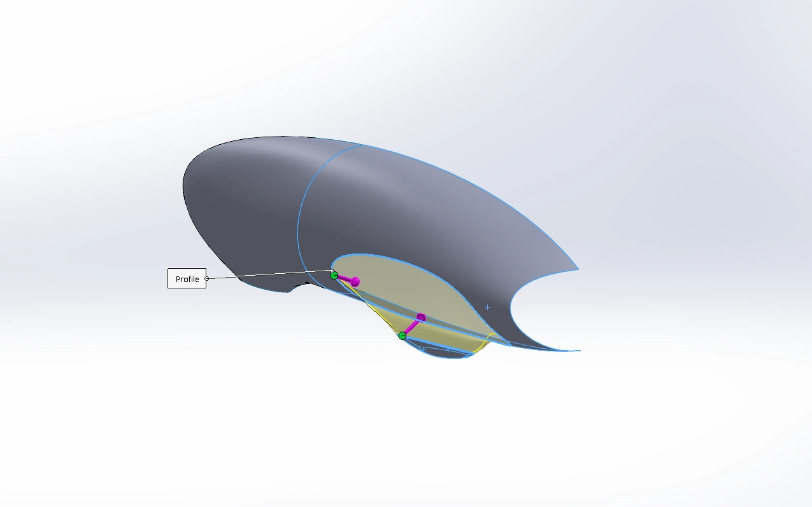
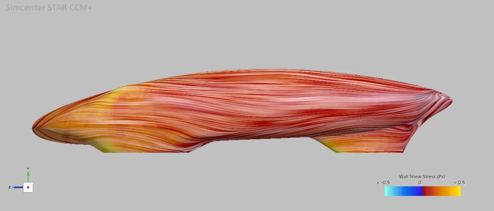
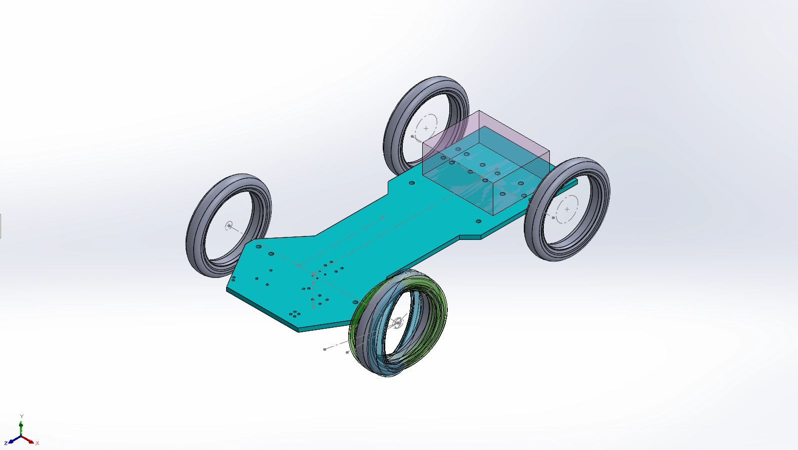
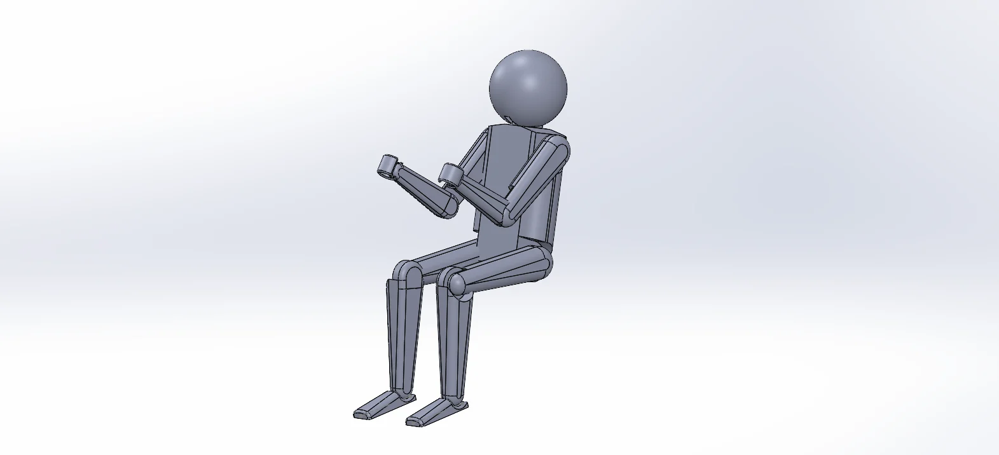
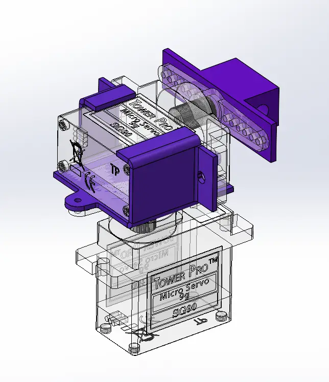
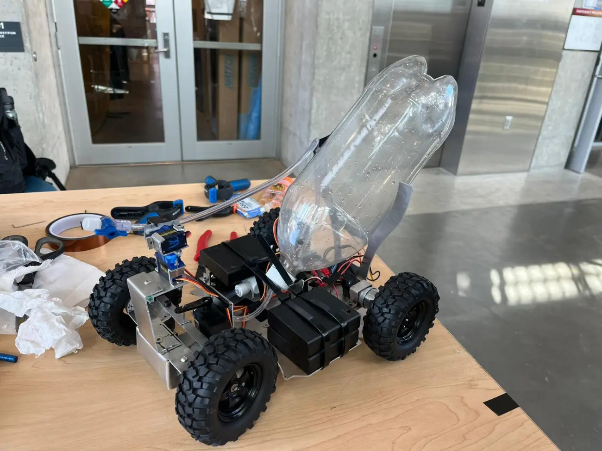
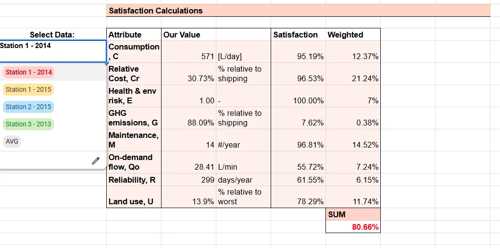
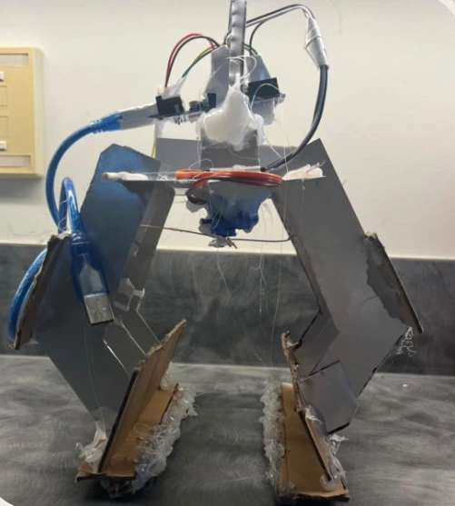
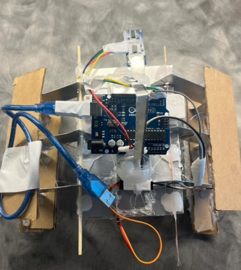

Hi! I’m Yoonmin.
I am a third year mechanical engineering student at UBC specializing in mechatronics.
I enjoy testing innovative ideas to solve problems, applying this philosophy across projects ranging from aerodynamic vehicle designs to water delivery systems.
Feel free to reach out on Linkedin or by email if you want to have a chat, whether it's about work opportunities, vehicle aerodynamics, or my favourite bubble tea order!

VEHICLE SHELL DESIGN & SURFACE MODELLING RESEARCH : UBC Supermileage
Design concepts for the team's newest Fuel Cell Prototype vehicle. I focused on exploring ergonomic designs, providing insights to the trade-offs between aerodynamics and driver comfort.
I contributed to the developent of the team's 3D modelling workflow, delving into surface modelling features in SolidWorks. As a result, our team acquired surface modelling techniques used to connect multiple surfaces flawlessly, improving simulation results and aerodynamic performance.

COMPUTATIONAL FLUID DYNAMICS (CFD) VALIDATION STUDIES : UBC Supermileage
To ensure that the team's Computational Fluid Dynamics (CFD) template results correlate with reality, I conducted CFD validation studies in STAR-CCM+, and established the team’s new CFD methodology by performing a baseline validation simulation.

VEHICLE DESIGN TEMPLATE : UBC Supermileage
A SolidWorks assembly template for the team's new Urban Concept Vehicle. This template enables future shell concepts to be modelled directly in the assembly, ensuring that designs meet competition guidelines and assembly constraints. Additionally, equations were used to allow the user to adjust dimensions such as track width and vehicle length.

ADJUSTABLE DRIVER MODEL : UBC Supermileage
A SolidWorks model of a full human body. This model uses Alycia Cheng's work as a base. Modifications were made to the joint designs and equations of the original model, so that users can input the vehicle driver's dimensions and create a replica model. This adjustable model allows the team to design a vehicle for the driver's specific needs, and verifies that safety requirements are met.


WATER DELIVERY VEHICLE : MECH 223 Team Project
Design and manufacture of an RC fire-fighting vehicle. The main vehicle body consists fully of sheet metal, and its movement is controlled by servo motors. It uses pressurized air to discharge the water.
I designed the rotational mechanism for the water nozzle, which is made with sheet metal and is attached to the servo motors with screws. To fully analyse the system, I developed and performed an experiment to determine the friction factor of the nozzle system. This was then used to optimize the amount of water in our vehicle's water storage, and simulate the water trajectory.
STUDY-GOTCHI : Personal Project
A Python game built using Pygame, inspired by the 'Tamagotchi' toy series. In this game, players take care of a pet octopus by studying. Time studied by the player is recorded, then converted into in-game currency, which the players can use to purchase in-game items. The game also includes a pomodoro timer to encourage healthy study habits.

RAINWATER HARVESTING SYSTEM : APSC 101 Team Project
A mathematical model of a solar-powered rainwater harvesting system in Microsoft Excel, used to optimize the system's specifications. Fluid mechanics concepts were applied to accurately model the physics of the system. To ensure that the system remained consistent for any set of data, historical data of yearly precipitation and sunlight were utilized.


AUTONOMOUS CLAW : APSC 101 Team Project
An autonomous claw that uses an ultrasonic sensor and an Arduino Uno to detect objects within a range and pick them up. The claw's movements are controlled by a servo. I contributed to the conceptualization of the claw, as well as prototyping using sheet metal and cardboard.